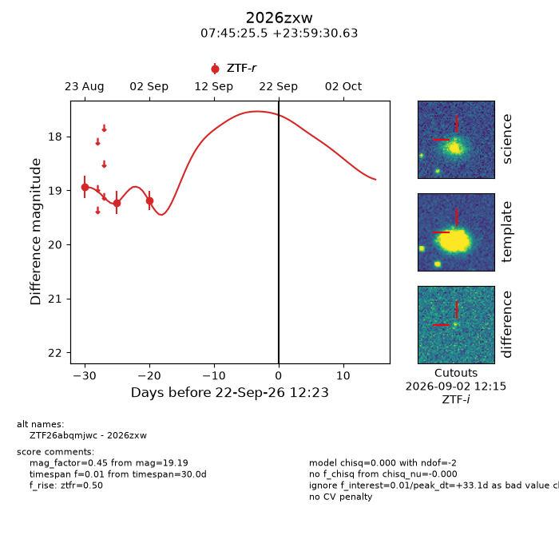
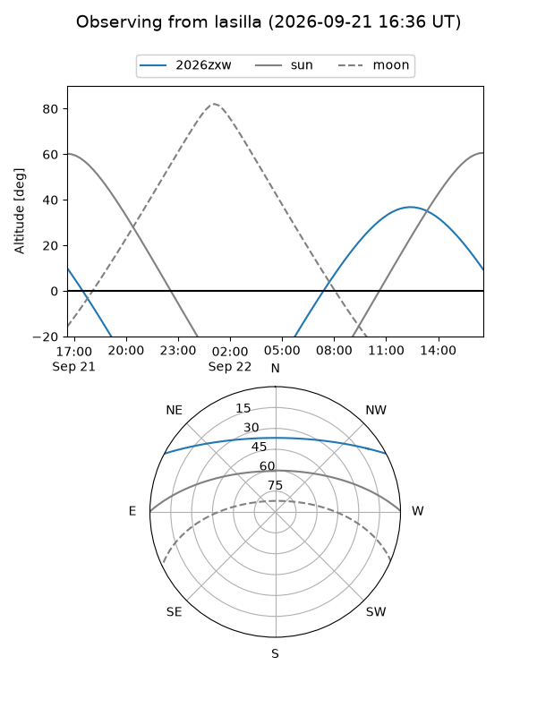
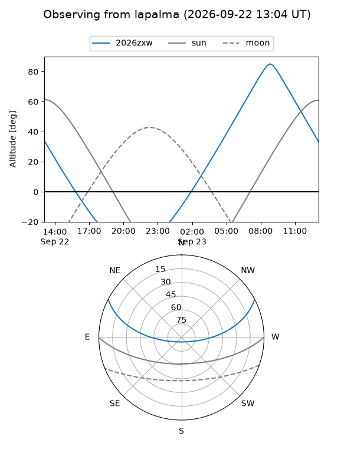
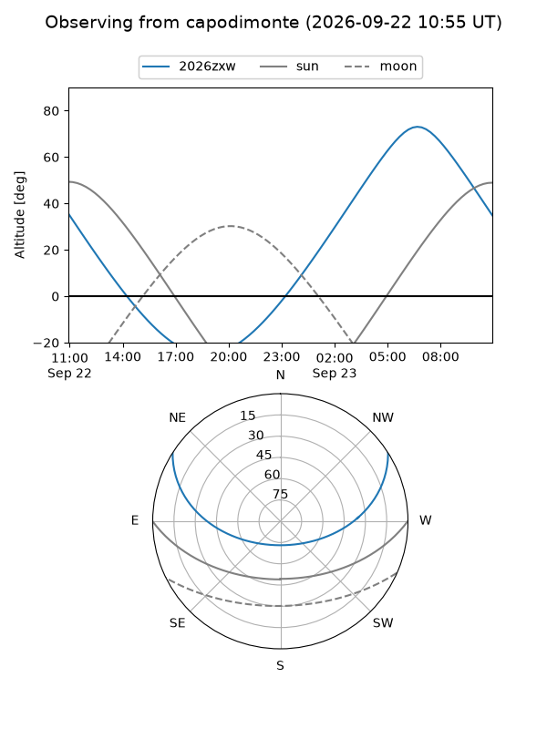
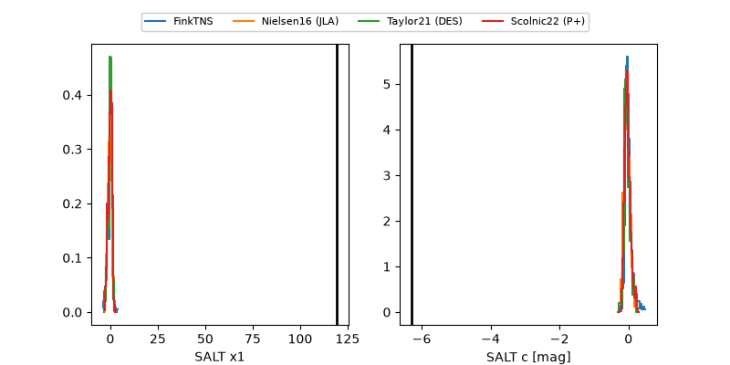

2026zxw
Target 2026zxw at 2026-09-22 12:25
Aliases and brokers:
FINK-ZTF: ztf.fink-portal.org/ZTF26abqmjwc
Lasair-ZTF: lasair-ztf.lsst.ac.uk/objects/ZTF26abqmjwc
ALeRCE-ZTF: alerce.online/object/ZTF26abqmjwc
YSE-PZ: ziggy.ucolick.org/yse/transient_detail/2026zxw
TNS name: wis-tns.org/object/2026zxw
Direct TNS query: direct search
alt names
ZTF26abqmjwc (ztf,fink_ztf)
2026zxw (tns,yse)
Coordinates:
equatorial (ra, dec) = 116.3563,+23.99184
equatorial (HMS+DMS) = 07:45:25.52,+23:59:30.63
galactic (l, b) = (196.3431,+22.03520)
Flags:
TNS type: nan
peak dt: +33.1
Photometry:
last ztfr=19.19
3 ztfr detections
Lightcurve

Visibility



Additional plots
